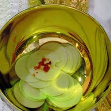

Buenos Aires, Argentina
Una hostia sangrante fue analizada y se descubrió que contenía tejido cardíaco humano con signos de sufrimiento.
Ver más
Lanciano, Italia
En el siglo VIII, una hostia se convirtió visiblemente en carne y el vino en sangre humana, conservados hasta hoy.
Ver más

Tixtla, México
Una hostia consagrada comenzó a sangrar durante una misa. Estudios revelaron sangre tipo AB y tejido humano.
Ver más